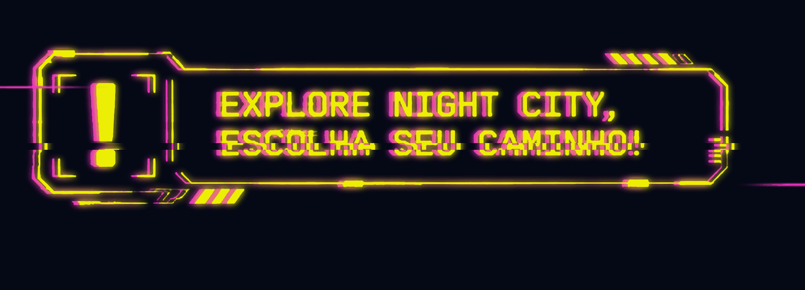
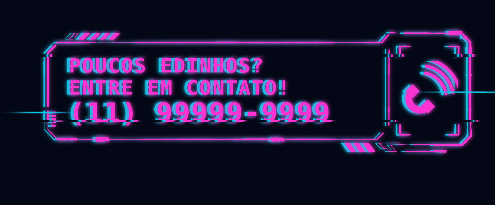
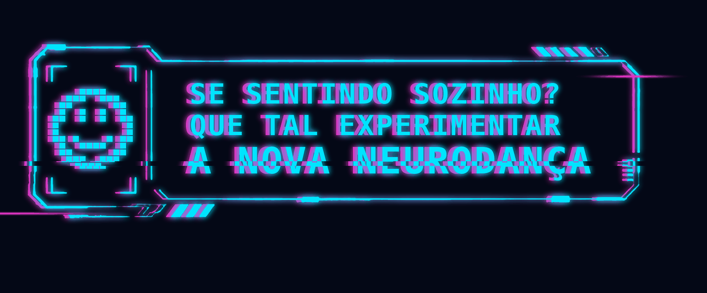
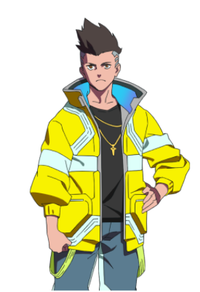
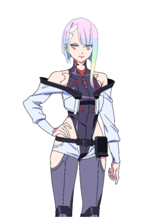
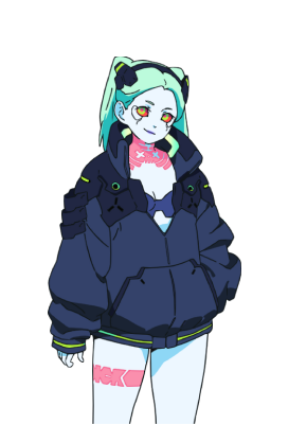
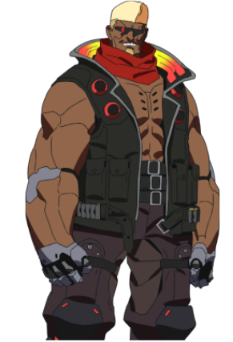

Cyberpunk: Edgerunners_
Conta uma história independente de 10 episódios sobre um marginal tentando
sobreviver em uma
cidade do
futuro obcecada por tecnologia e modificações corporais.
Tendo tudo a perder, ele opta por permanecer vivo tornando-se um mercenário, também conhecido como
cyberpunk.
Mercenários_

DAVID MARTINEZ
Um jovem de Night City que sonha em alcançar o topo do mundo. Após uma tragédia pessoal, David entra para o mundo dos mercenários e passa a desafiar seus próprios limites utilizando implantes cibernéticos. Sua determinação e lealdade o tornam alguém disposto a arriscar tudo por aqueles que ama.

LUCY
Uma habilidosa netrunner que prefere manter seu passado em segredo. Especialista em invasões de sistemas e extremamente inteligente, Lucy sonha em escapar de Night City e encontrar liberdade na Lua. Por trás de sua personalidade reservada, esconde sentimentos profundos e um passado complicado.

REBECCA
Uma mercenária impulsiva, divertida e extremamente habilidosa com armas de fogo. Apesar de sua personalidade explosiva e aparência descontraída, Rebecca é profundamente leal à sua equipe. Não hesita em enfrentar qualquer perigo para proteger as pessoas que considera importantes.

MAINE
Um dos mercenários mais experientes de Night City e líder de sua própria equipe. Forte, respeitado e ambicioso, Maine é uma figura de liderança que valoriza seus companheiros. Entretanto, sua busca constante por poder e aprimoramento cibernético coloca sua própria estabilidade em risco.
// CLIQUE AQUI PARA SABER A HISTÓRIA ▼ NIGHT CITY_
Night City. Uma metrópole construída sobre promessas de riqueza, poder e reconhecimento.
Localizada na costa oeste dos Estados Unidos, ela é conhecida por seus enormes arranha-céus,
luzes de neon, tecnologias avançadas e uma sociedade dominada por megacorporações.
À primeira vista, parece o lugar perfeito para recomeçar. Uma cidade onde qualquer pessoa
pode tentar mudar seu destino, conquistar fortuna e alcançar o topo do mundo. Mas, por trás
de toda essa iluminação, existe uma realidade muito diferente.
Em Night City, o dinheiro fala mais alto que a justiça. As megacorporações disputam poder
sem se importar com as consequências, enquanto gangues controlam territórios e a população
tenta sobreviver em meio à violência, à desigualdade e à corrupção. A tecnologia evoluiu
a ponto de permitir que partes do corpo humano sejam substituídas por implantes cibernéticos,
mas isso não significa que a vida tenha se tornado melhor.
Nesse mundo, até mesmo o próprio corpo pode se transformar em uma ferramenta para alcançar
poder. Quanto mais alguém se modifica, mais próximo pode chegar de perder aquilo que o torna
humano.
É nesse cenário que surgem os mercenários, conhecidos como Edgerunners. Pessoas que
aceitam trabalhos perigosos, enfrentam corporações e arriscam suas vidas por dinheiro,
reconhecimento ou simplesmente pela chance de sobreviver mais um dia. Muitos sonham em se
tornar lendas, ter seus nomes lembrados e deixar alguma marca na cidade.
Mas Night City não se importa com os sonhos de ninguém.
Em Night City, não tem final feliz.
Você pode chegar ao topo do mundo, conquistar tudo o que sempre desejou e ainda assim perder
aquilo que realmente importava. Porque, nessa cidade, sobreviver já é uma vitória, e se tornar
uma lenda não significa necessariamente ter uma história feliz.
No fim, Night City continua de pé. As luzes permanecem acesas, as ruas continuam movimentadas
e novos sonhadores chegam todos os dias, acreditando que serão diferentes dos que vieram antes.
A cidade nunca para. As histórias terminam. E outras começam.

Qual tipo de Edgerunner é você?
Que tal responder algumas perguntinhas? Cadastre-se já!